Moorgen Smart Home System Product Launch 2023: Insights from Once Design Studio
Design Trend · · Once Design · 3 min read
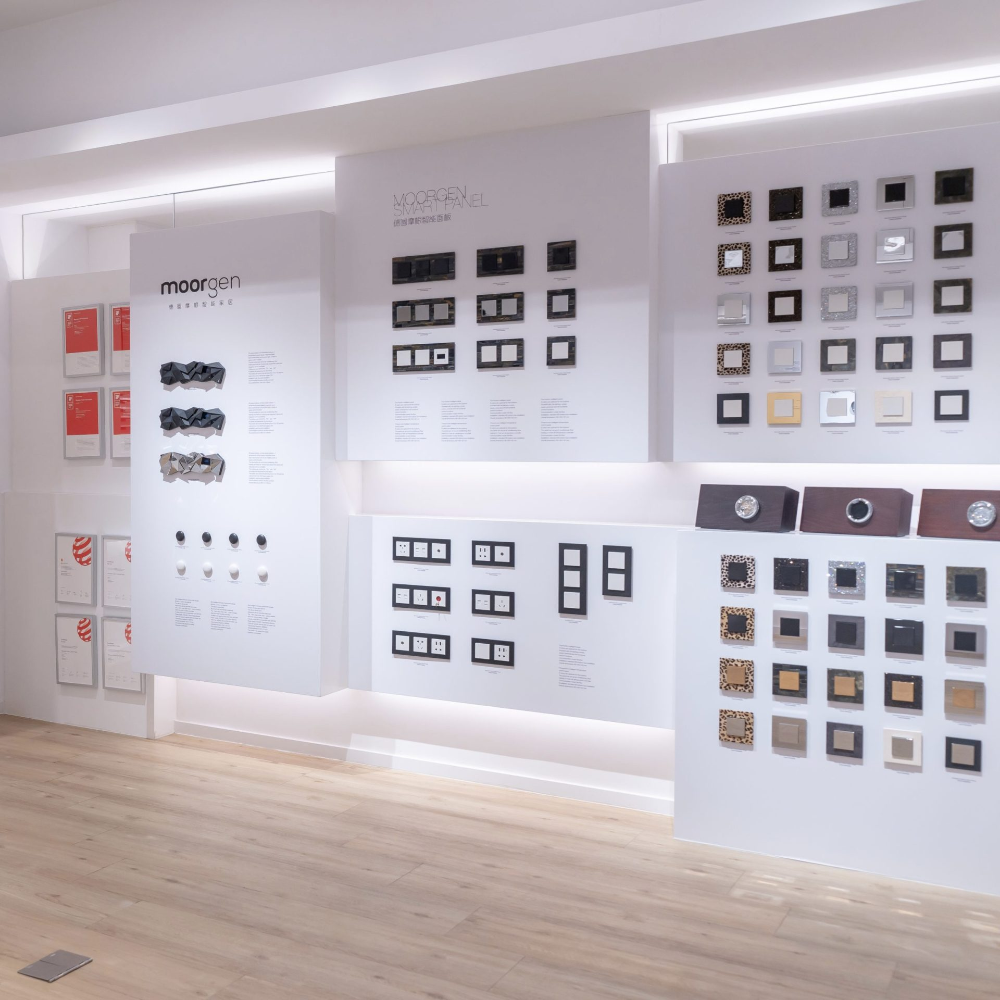
Once Design Team’s Insightful Exchange With Moorgen On The Future Of Smart Homes.
The Once Design Studio team was elated to be invited by Home Journal and the German brand, Moorgen Smart Home, to attend the Moorgen 2023 Product Launch in Hong Kong. The attendees included Mr. Sun Yong, Chairman of Moorgen Group, Mr. Ben Wu, Vice President of the Board of Directors, Mr. Shao Yuanhu, Assistant to the Chairman, Mr. Yang Chunyu, Director of VIP Business Department, renowned lighting designer Mr. Shi Haifeng, and a group of designers, among others.
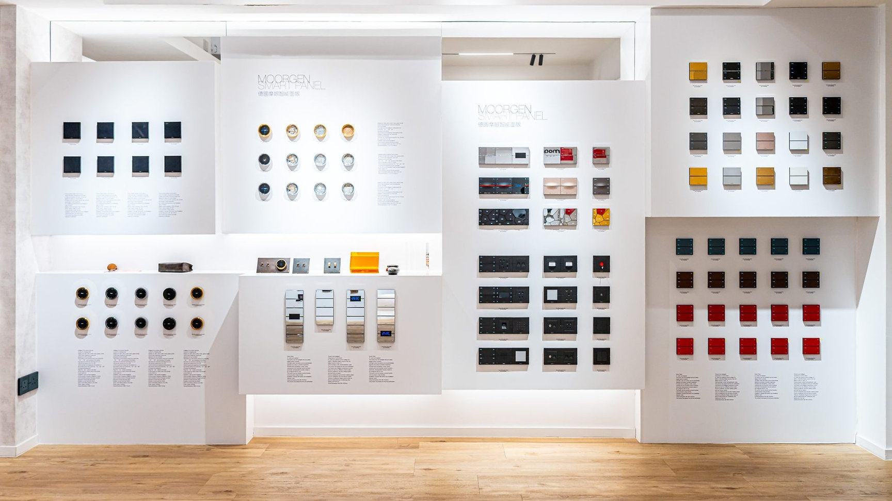
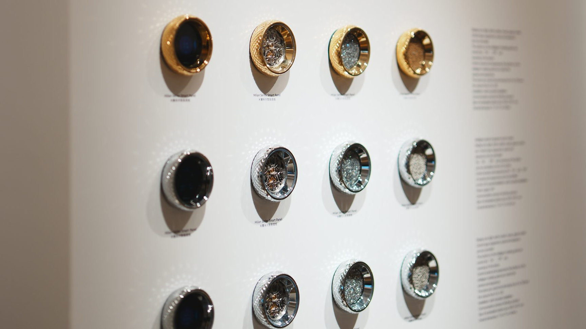
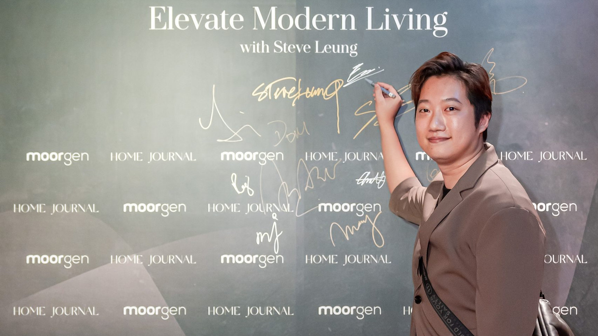
When Interior Design Meets Smart Home
Established in 2016, Moorgen Smart Home is a global leader in the smart home industry. With the help of its proprietary Moorgen AI algorithm (MIA), the company has developed smart home products and systems that are simple, comfortable, and user-centric.
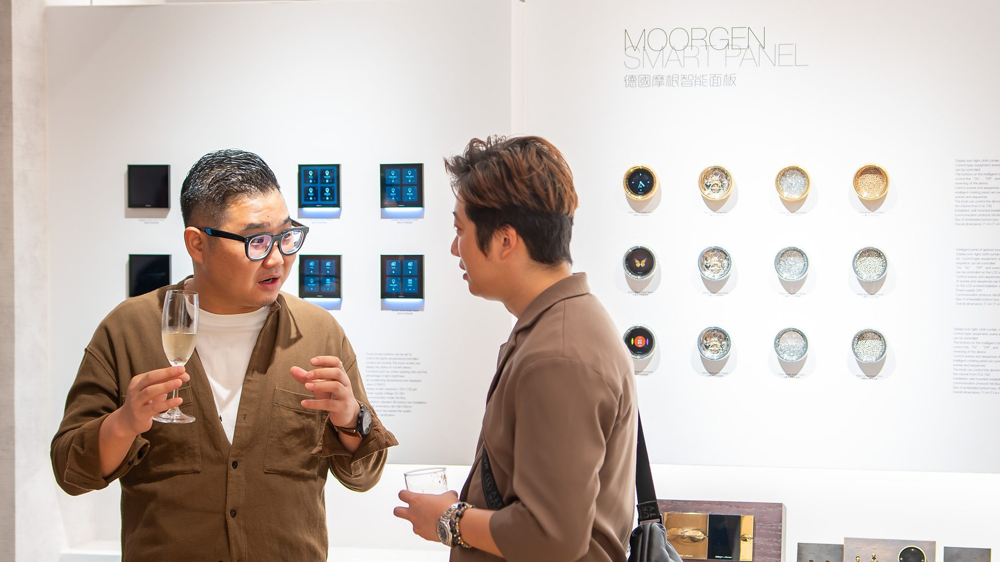
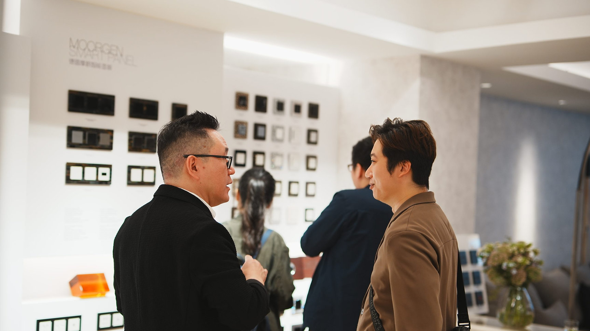
In this era, interior design is no longer just about aesthetics and utility. It’s about integrating smart technology to create an even more convenient and comfortable living experience. While traditional home design focuses on spatial layout, material selection, and color coordination, modern technology introduces a plethora of new possibilities to home living.
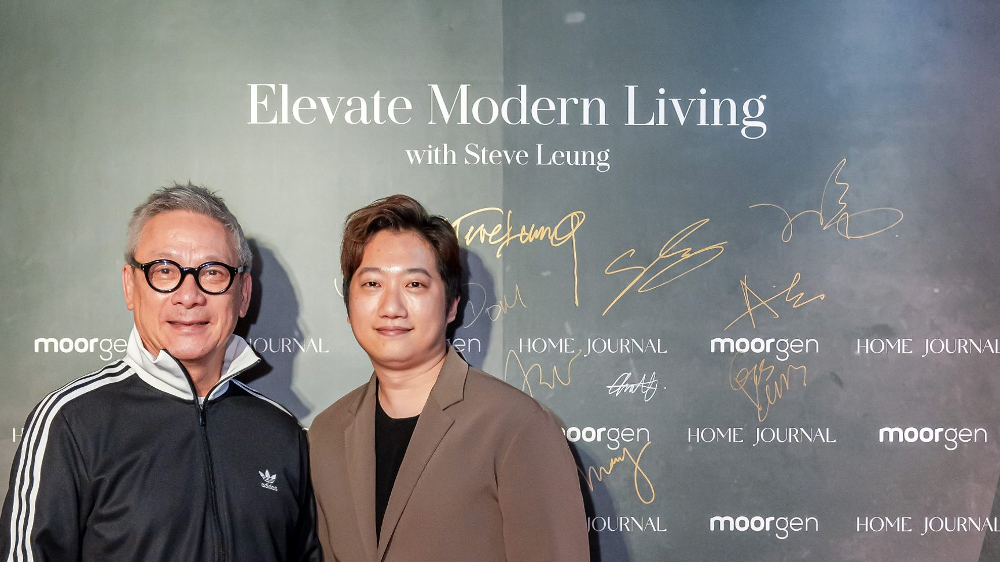
Redefining Life With Moorgen Smart Home System
The essence of smart home lies in the word “home”. After listening to the presentation by the speaker from Moorgen, it was clear that Moorgen’s products are incredibly apt for the lifestyle needs of Hong Kong residents. Their smart home systems are more user-friendly than most, with design aesthetics that are both trendy and technologically advanced. One of their notable series, the Supercar series, was even co-designed with the renowned Hong Kong designer, Mr. Steve Leung.
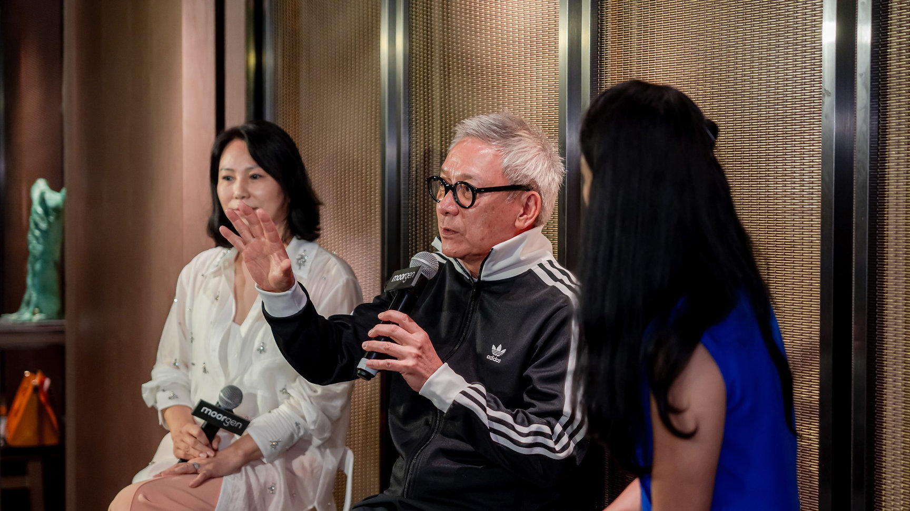
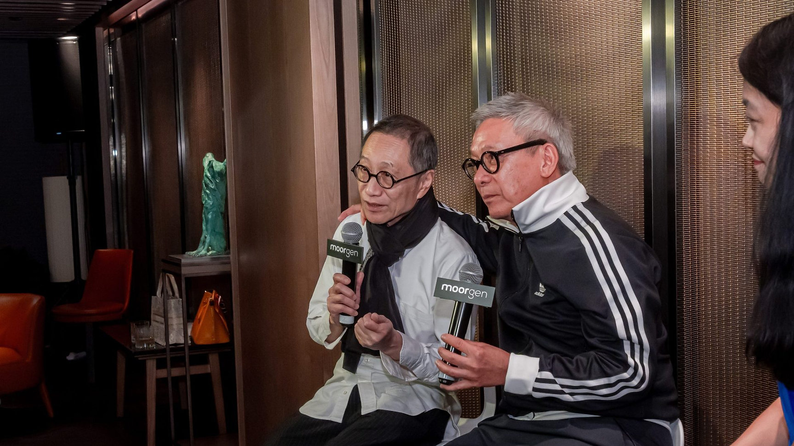
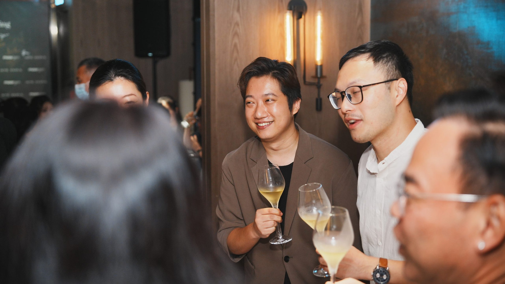
If you’ve kept an eye on interior design, you’d undoubtedly recognize the name Steve Leung. An acclaimed master in interior design and architecture, he excels in integrating Asian cultural and artistic elements into his work. In 2021, Steve Leung collaborated with the luxury smart home brand Moorgen to design the “Supercar” smart panel. The event was graced with the presence of both Mr. Steve Leung and Mr. Chan Yau Kin, who generously shared their design philosophies. This exchange on current design trends and directions was an enlightening experience for our team, and we felt privileged to be part of it.
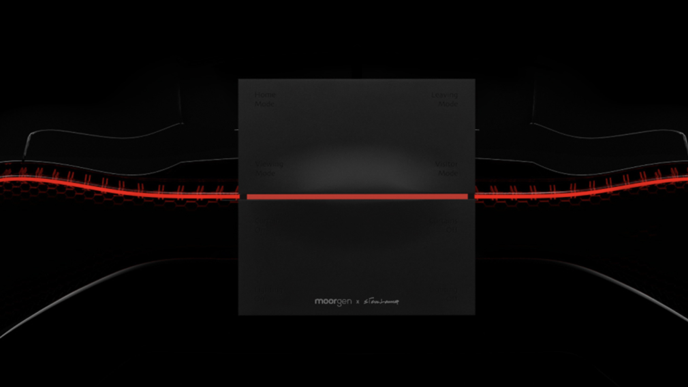
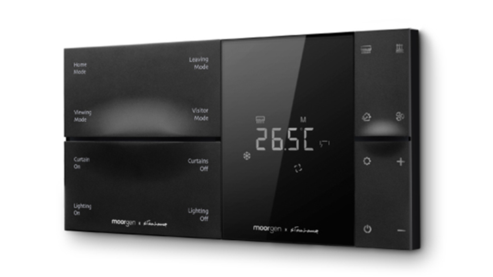
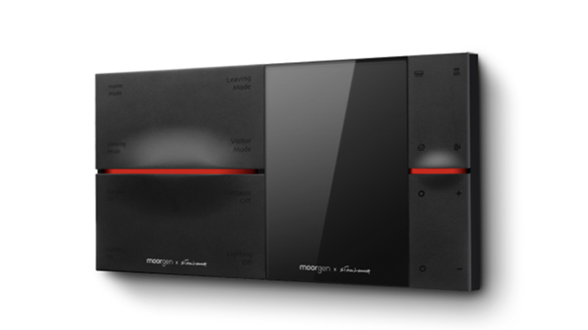
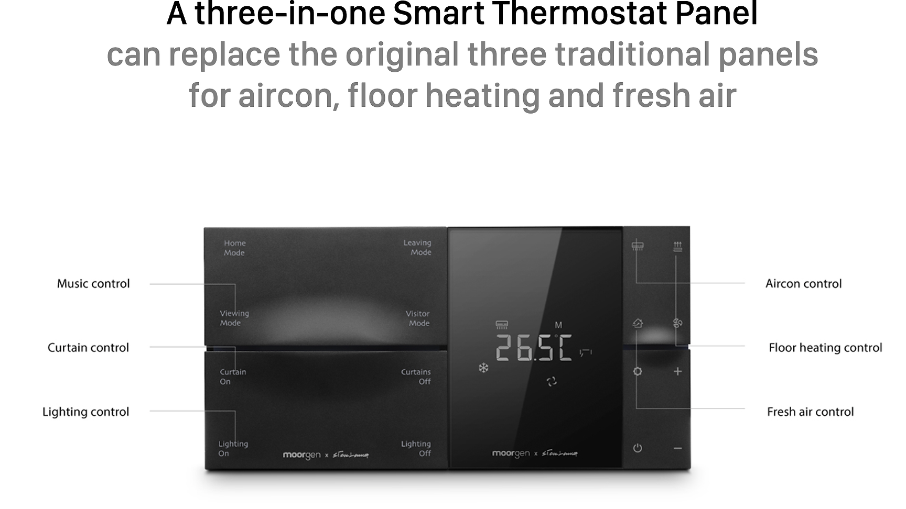
The Supercar Series By Steve Leung: Speed And Passion
The design inspiration for the Supercar Series stems from the sleek aesthetics of supercars, and this agile style is seamlessly integrated into the collection, invoking the “speed and passion” that resonates with urbanites.
Smart Sensor is a key feature of this series. When approaching the smart panel, the buttons automatically illuminate, providing convenient operation. As you move away from the panel, a “tail light” design emerges. In addition, the smart panel incorporates Vibration Feedback functionality. Upon pressing a button, the panel responds with subtle vibrations, ensuring that your commands have been received. This emphasis on user experience demonstrates the designer’s commitment to creating a seamless and intuitive interface. The smart panels in this series not only offer powerful functionality but also showcase unique design elements, adding an unparalleled sense of style and technology to any home.